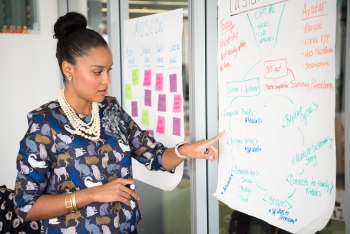

The Essence of Effective Leadership
Leadership is a profound force that transcends mere orders and instructions. It's the art of inspiring, guiding, and empowering a team to pursue shared goals and aspirations. True leaders, those who truly make an impact, lead by example. They set exceptionally high standards for themselves, becoming a source of inspiration for those around them. The effect of effective leadership is palpable—it instills a sense of purpose and direction that propels teams and entire organizations forward on a trajectory of success.
Great leaders embody a set of fundamental qualities that set them apart. They are adept communicators, able to convey their vision with clarity and conviction. Their empathy and understanding create an environment where everyone feels valued and understood. Visionaries by nature, they can see the bigger picture, charting a course towards a brighter future. Adaptability is in their DNA; they embrace change and challenges as opportunities for growth. These qualities aren't static but evolve through continuous learning and self-awareness. Effective leadership isn't just a skill; it's a lifelong journey of growth and refinement. By embracing these principles, we not only elevate ourselves but also nurture an environment where those around us can thrive and flourish.